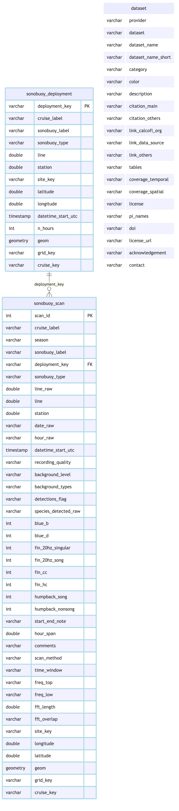
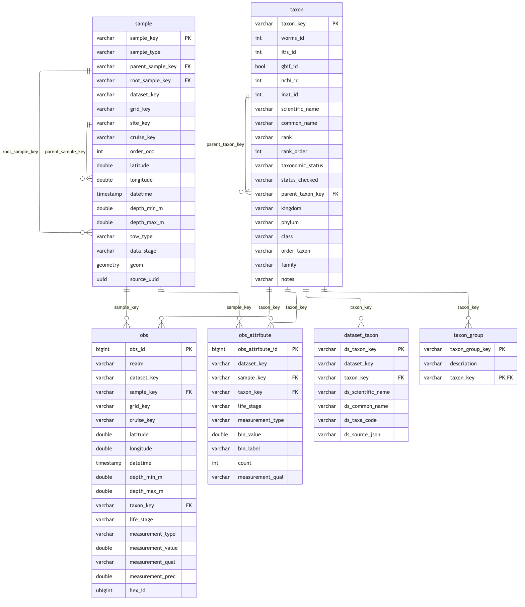

graph LR R[acoustic-raw.csv<br/>one row per hour] --> SC[sonobuoy_scan] SC --> DP[sonobuoy_deployment<br/>cruise x SB#] SC --> CL[_scan_call<br/>hour x call type 0/1] SC -.deployment_key.-> DP
Ingest SIO Cetacean Sonobuoy Detections
Overview
Source: data/acoustic_data/acoustic-raw.csv in CalCOFI/marmam-app, read from a pinned commit. It is the “Everything” sheet of the lab’s workbook CalCOFI data all cruises, calculations.xlsx: one row per analysed hour of a sonobuoy recording (3,244 hours, 962 deployments, 35 cruises, 2004–2012). An analyst scanned each hour as 60-second spectrogram windows and flagged eight call types: blue whale B and D calls, four fin whale call types, humpback song and non-song calls.
The app’s acoustic_detections_v2.csv / acoustic_station_v2.csv are not read: they are per-station summaries derived from this sheet.
- Provider:
sio(Scripps Whale Acoustics Lab, Baumann-Pickering; Q03) - Grain: an analysed hour (
scan), the child of its sonobuoydeployment - Occurrence:
acoustic_presence= 1 when any of the species’ call types was heard in the hour, 0 when none was; the call types heard go toobs_attribute - Position: the sheet records the CalCOFI line/station, not the sonobuoy’s position, so the nominal station position is used (
cc_calcofi_to_lonlat())
Setup
devtools::load_all(here::here("../calcofi4db"))
devtools::load_all(here::here("../calcofi4r"))
librarian::shelf(
CalCOFI/calcofi4db, CalCOFI/calcofi4r,
DBI, dplyr, DT, fs, glue, here, jsonlite, knitr,
lubridate, purrr, readr, sf, stringr, tibble, tidyr, quiet = T)
options(readr.show_col_types = F)
options(DT.options = list(scrollX = TRUE))
source(here("libs/ingest.R"))
cc <- read_calcofi_meta(here("ingest_sio_cetacean-sonobuoy.qmd"))
provider <- cc$provider
dataset <- cc$dataset
tables_owned <- cc$tables_owned
ds_key <- as.character(glue("{provider}_{dataset}"))
dir_label <- ds_key
dir_parquet <- here(glue("data/parquet/{dir_label}"))
dir_stage <- cc_stage_path("parquet", dir_label, create = TRUE)
db_path <- here(glue("data/wrangling/{dir_label}.duckdb"))
dir_meta <- here(glue("metadata/{provider}/{dataset}"))
dir_dl <- here(glue("data/cache/{dir_label}")); dir_create(dir_dl)
publish_to_gcs <- Sys.getenv("CALCOFI_SKIP_GCS") == ""
if (overwrite) {
if (file_exists(db_path)) file_delete(db_path)
if (file_exists(paste0(db_path, ".wal"))) file_delete(paste0(db_path, ".wal"))
}
dir_create(dirname(db_path))
con <- get_duckdb_con(db_path)
load_duckdb_extension(con, "spatial")Read Source Data
# CalCOFI/marmam-app at a pinned commit (see ingest_sio_cetacean-sightings.qmd)
src_sha <- "7bc0e18d7cb0ac7ba58d7bc4d47e57c50bd9bc80"
src_url <- glue("https://raw.githubusercontent.com/CalCOFI/marmam-app/{src_sha}/data/acoustic_data/acoustic-raw.csv")
src_file <- file.path(dir_dl, "acoustic-raw.csv")
downloaded <- overwrite_all || !file_exists(src_file)
if (downloaded) download.file(src_url, src_file, quiet = TRUE, mode = "wb")
src_stamp <- stamp_source_access(files = src_file) |>
mutate(source = as.character(src_url), method = if (downloaded) "download" else "file_mtime")
if (publish_to_gcs) {
sync_to_gcs(local_dir = dir_dl, gcs_prefix = glue("archive/{provider}/{dataset}"),
bucket = "calcofi-files-public")
} else {
cat("CALCOFI_SKIP_GCS set -- source NOT archived to gs://calcofi-files-public\n")
}rsync /Users/bbest/Github/CalCOFI/.worktrees/workflows-pr117/data/cache/sio_cetacean-sonobuoy -> gs://calcofi-files-public/archive/sio/cetacean-sonobuoySync complete: 1 copied, 0 removed (rsync)# A tibble: 1 × 4
file action size reason
<chr> <chr> <dbl> <chr>
1 <rsync> uploaded NA parallel rsync# UTF-8 with a BOM (readr strips it); every column as text, typed below
d_raw <- read_csv(src_file, col_types = cols(.default = "c"))
n_blank <- sum(is.na(d_raw$Cruise))
d_raw <- d_raw |> filter(!is.na(Cruise)) # one fully empty trailing row
stopifnot(
"row count changed at this commit" = nrow(d_raw) == 3244L,
"only the one blank row is dropped" = n_blank == 1L)
cat(glue("acoustic-raw: {nrow(d_raw)} analysed hours ({n_blank} blank row dropped)"), "\n")acoustic-raw: 3244 analysed hours (1 blank row dropped) Build Scan + Deployment Tables
num <- function(x) suppressWarnings(as.numeric(x))
# the sheet rounds the fractional CalCOFI lines (83.3 -> 83); undo it (Q06).
# 60/70/80/90 are exact; 76, 82, 86 and 92 are kept as recorded.
line_fix <- c(`63` = 63.3, `67` = 66.7, `73` = 73.3, `77` = 76.7,
`83` = 83.3, `87` = 86.7, `93` = 93.3)
# the eight call-type columns: which species each belongs to, and its label
d_call <- tribble(
~src_col, ~call_col, ~species_code, ~call_label,
"Blue B", "blue_b", "blue", "blue whale B call",
"Blue D", "blue_d", "blue", "blue whale D call",
"Fin 20Hz Singular", "fin_20hz_singular", "fin", "fin whale 20 Hz pulse (singular)",
"Fin 20Hz Song", "fin_20hz_song", "fin", "fin whale 20 Hz song",
"Fin C.C.", "fin_cc", "fin", "fin whale C.C. call",
"Fin H.C.", "fin_hc", "fin", "fin whale H.C. call",
"Humpback Song", "humpback_song", "humpback", "humpback whale song",
"Humpback Non-song", "humpback_nonsong", "humpback", "humpback whale non-song call")
d_scan <- d_raw |>
mutate(scan_id = row_number()) |>
rename_with(\(x) d_call$call_col[match(x, d_call$src_col)], all_of(d_call$src_col)) |>
transmute(
scan_id,
cruise_label = str_trim(Cruise),
season = str_trim(Season),
sonobuoy_label = str_trim(`SB#`),
deployment_key = paste(cruise_label, sonobuoy_label, sep = "_"),
sonobuoy_type = str_trim(`D/O?`),
line_raw = num(`CC Line`),
line = coalesce(unname(line_fix[as.character(line_raw)]), line_raw),
station = num(`CC Station`),
date_raw = Date,
hour_raw = Hour,
# the hour that was analysed: its leading number, because Hour is written
# "15:00:00", "22:00" and twice "22:000:00"; minutes are always 00.
# Date + hour read as UTC (Q04)
datetime_start_utc = mdy(Date, tz = "UTC") +
hours(as.integer(str_extract(Hour, "^\\d{1,2}"))),
# verbatim grade, whitespace-trimmed and lower-cased ("HIgh", "High "):
# the markers * / ** are kept, uninterpreted (Q05)
recording_quality = na_if(str_to_lower(str_trim(Quality)), ""),
background_level = str_trim(`Sarah's scale (amt of background)`),
background_types = str_trim(`Types of Background`),
detections_flag = str_to_lower(str_trim(`Detections?`)),
species_detected_raw = str_trim(`Spp. Detected`),
across(all_of(d_call$call_col), \(x) as.integer(num(x))),
start_end_note = `Start/End`,
hour_span = num(`Hour spans`),
comments = Comments,
scan_method = `Scan Method`,
time_window = `Time window`,
freq_top = `Top freq`,
freq_low = `Low Freq`,
fft_length = num(`FFT Length`),
fft_overlap = Overlap) |>
mutate(
site_key = if_else(!is.na(line) & !is.na(station),
normalize_site_key(sprintf("%.1f %.1f", line, station)), NA_character_))
# nominal station position: the sheet has no sonobuoy position
xy <- cc_calcofi_to_lonlat(d_scan$line, d_scan$station)
d_scan$longitude <- xy$longitude
d_scan$latitude <- xy$latitude
stopifnot(
"every hour has a time" = !anyNA(d_scan$datetime_start_utc),
"every call flag is 0 or 1" = all(unlist(d_scan[d_call$call_col]) %in% c(0L, 1L)),
"detections_flag is yes / no / adhoc only" =
all(d_scan$detections_flag %in% c("yes", "no", "adhoc only")),
"an 'adhoc only' hour carries no call flag (Q08)" =
all(rowSums(d_scan[d_scan$detections_flag == "adhoc only", d_call$call_col]) == 0),
"a position exactly where there is a line and station" =
identical(is.na(d_scan$latitude), is.na(d_scan$line) | is.na(d_scan$station)) &&
identical(is.na(d_scan$site_key), is.na(d_scan$latitude)))
dbWriteTable(con, "sonobuoy_scan", d_scan, overwrite = TRUE)
# a deployment is one sonobuoy on one cruise; its station and type are those of
# its first analysed hour (one deployment changes station mid-record)
d_deployment <- d_scan |>
arrange(deployment_key, datetime_start_utc) |>
group_by(deployment_key) |>
summarise(
cruise_label = first(cruise_label), sonobuoy_label = first(sonobuoy_label),
sonobuoy_type = first(sonobuoy_type),
line = first(line), station = first(station), site_key = first(site_key),
latitude = first(latitude), longitude = first(longitude),
datetime_start_utc = min(datetime_start_utc),
n_hours = n(), .groups = "drop")
dbWriteTable(con, "sonobuoy_deployment", d_deployment, overwrite = TRUE)
# long form of the call flags: one row per hour x call type
d_scan_call <- d_scan |>
select(scan_id, all_of(d_call$call_col)) |>
pivot_longer(-scan_id, names_to = "call_col", values_to = "heard") |>
left_join(d_call |> select(call_col, species_code, call_label), by = "call_col")
dbWriteTable(con, "_scan_call", d_scan_call, overwrite = TRUE)
cat(glue("sonobuoy_scan: {nrow(d_scan)} hours; sonobuoy_deployment: {nrow(d_deployment)}; ",
"{sum(is.na(d_scan$site_key))} hours without a station (Q10); ",
"{sum(d_scan$detections_flag == 'adhoc only')} 'adhoc only' hours (Q08)"), "\n")sonobuoy_scan: 3244 hours; sonobuoy_deployment: 962; 141 hours without a station (Q10); 154 'adhoc only' hours (Q08) The free-text Spp. Detected column is kept for audit only; the call-type flags decide presence (Q09). The hours where the two disagree:
d_xchk <- d_scan_call |>
group_by(scan_id, species_code) |>
summarise(flag = as.integer(max(heard) > 0), .groups = "drop") |>
left_join(d_scan |> select(scan_id, cruise_label, sonobuoy_label, species_detected_raw), by = "scan_id") |>
mutate(text = as.integer(str_detect(str_to_lower(coalesce(species_detected_raw, "")), species_code))) |>
filter(flag != text)
cat(glue("Spp. Detected disagrees with the call flags on {nrow(d_xchk)} hour x species rows ",
"({paste(names(table(d_xchk$species_code)), table(d_xchk$species_code), sep = ': ', collapse = '; ')})"), "\n")Spp. Detected disagrees with the call flags on 24 hour x species rows (blue: 4; fin: 9; humpback: 11) d_xchk |> datatable(caption = "Spp. Detected vs call flags (flags win; Q09)", rownames = FALSE)Resolve cruise_key + Spatial
The cruise label (CC1210NH) is a year-month plus a ship/leg suffix, not a cruise key. As for the sightings, each hour is matched to the nearest CalCOFI station occupied within a day on the swfsc_ichthyo track, with a majority vote per label; the vote reaches the hours without a station too.
load_prior_tables(con, parquet_dir = cc_stage_path("parquet", "swfsc_ichthyo"),
tables = c("grid"), geom_tables = c("grid"), as_view = TRUE)Loaded grid: 218 rows (VIEW) (GEOMETRY)# A tibble: 1 × 3
table rows has_geom
<chr> <dbl> <lgl>
1 grid 218 TRUE for (tbl in c("sonobuoy_deployment", "sonobuoy_scan")) {
add_point_geom(con, tbl, lon_col = "longitude", lat_col = "latitude")
assign_grid_key(con, tbl)
}Added geom column to sonobuoy_deployment tableAssigned grid_key to sonobuoy_deployment: not_in_grid = 47, in_grid = 915Added geom column to sonobuoy_scan tableAssigned grid_key to sonobuoy_scan: in_grid = 3092, not_in_grid = 152dbExecute(con, glue(
"CREATE OR REPLACE VIEW cruise_track AS
SELECT DISTINCT cruise_key, datetime, latitude, longitude
FROM read_parquet('{cc_stage_path('parquet','swfsc_ichthyo','sample.parquet')}')
WHERE cruise_key IS NOT NULL AND datetime IS NOT NULL"))[1] 0cruise_match <- match_cruise_by_track(
con, "sonobuoy_scan", "cruise_track",
datetime_col = "datetime_start_utc", lon_col = "longitude", lat_col = "latitude",
ref_datetime_col = "datetime", group_col = "cruise_label", window_days = 1)match_cruise_by_track: 3244/3244 sonobuoy_scan rows got a cruise_key (100%) within 25 km / 1 d, by cruise_label consensus (min_share 0.5)dbExecute(con, "ALTER TABLE sonobuoy_deployment ADD COLUMN IF NOT EXISTS cruise_key VARCHAR")[1] 0dbExecute(con, "
UPDATE sonobuoy_deployment d SET cruise_key = (
SELECT ANY_VALUE(s.cruise_key) FROM sonobuoy_scan s
WHERE s.cruise_label = d.cruise_label)")[1] 962grp <- cruise_match$groups
dupe <- grp$cruise_key[!is.na(grp$cruise_key)]
dupe <- dupe[duplicated(dupe)]
stopifnot(
"cruise_key must resolve on >90% of hours" = cruise_match$pct > 90,
"every cruise label must resolve to a distinct cruise_key" = length(dupe) == 0)
cat(glue("cruise_key resolved on {cruise_match$matched}/{cruise_match$total} hours ",
"({cruise_match$pct}%); unresolved labels: ",
"{paste(grp$cruise_label[is.na(grp$cruise_key)], collapse = ', ')}"), "\n")cruise_key resolved on 3244/3244 hours (100%); unresolved labels: grp |>
datatable(caption = "Cruise label -> cruise_key (vote share; NULL = unresolved)",
rownames = FALSE, filter = "top") |>
formatPercentage("share", 1)Load Dataset Metadata + Schema
this_provider <- provider; this_dataset <- dataset
d_dataset <- ingest_yaml_to_dataset_df(read_ingest_yaml(here())) |>
filter(provider == this_provider, dataset == this_dataset)
stopifnot(nrow(d_dataset) == 1)
dbWriteTable(con, "dataset", as.data.frame(d_dataset), overwrite = TRUE)
d_meas_type <- read_measurement_type(here("metadata/measurement_type.csv"))
stopifnot("every type this ingest emits is registered" =
all(c("acoustic_presence", "call_type") %in% d_meas_type$measurement_type))
dbWriteTable(con, "measurement_type", as.data.frame(d_meas_type), overwrite = TRUE)
# every recording-quality grade must be a registered code (measurement_qual.csv)
d_qual <- read_csv(here("metadata/measurement_qual.csv"), col_types = cols(.default = "c")) |>
filter(code_set == "cetacean-sonobuoy")
stopifnot("every recording_quality is a registered code" =
all(na.omit(d_scan$recording_quality) %in% d_qual$qual_code))
src_rels <- list(
primary_keys = list(sonobuoy_scan = "scan_id", sonobuoy_deployment = "deployment_key"),
foreign_keys = list(
list(table = "sonobuoy_scan", column = "deployment_key",
ref_table = "sonobuoy_deployment", ref_column = "deployment_key")))
cc_erd(con, tables = c("sonobuoy_deployment", "sonobuoy_scan", "dataset"),
rels = src_rels,
colors = list(lightblue = c("sonobuoy_deployment", "sonobuoy_scan"), white = "dataset"))
Questions for Data Providers
questions_datatable(
here(cc$questions_file),
caption = "Questions for the SIO sonobuoy data providers (ranked)")Emit Core Tables
| source | core | transform |
|---|---|---|
sonobuoy_deployment |
sample (deployment) |
key sio_cetacean-sonobuoy:deployment:<cruise_label>_<SB#>; nominal station position; first analysed hour |
sonobuoy_scan |
sample (scan) |
parent = its deployment |
| call flags, per species | obs acoustic_presence |
1 if any of the species’ call types was heard, else 0; only hours scanned systematically (Detections? yes/no, not ‘adhoc only’, Q08); measurement_qual = recording_quality |
| call flags = 1 | obs_attribute call_type |
bin_label = the call type, count = 1 |
Not published (kept in the archived source): background level and types, Spp. Detected, start/end notes, hour spans, comments, and the spectrogram settings (scan method, window, frequencies, FFT).
Taxon vocabulary
mt_taxon <- read_csv(here("metadata/measurement_taxon.csv"),
col_types = cols(worms_id = "i", itis_id = "i",
bin_value = "d", .default = "c")) |>
filter(dataset_key == ds_key)
tx_over <- read_csv(here("metadata/taxon_override.csv"), show_col_types = FALSE)
d_vocab <- tribble(
~ds_taxa_code, ~ds_scientific_name, ~ds_common_name,
"blue", "Balaenoptera musculus", "blue whale",
"fin", "Balaenoptera physalus", "fin whale",
"humpback", "Megaptera novaeangliae", "humpback whale")
n_staged <- append_dataset_taxon(con, ds_key, d_vocab)
ensure_taxon_xref(con, mt_taxon, tx_over, cache_csv = here("metadata/taxon_xref.csv"))taxon xref: 0 TSN + 0 AphiaID + 3 name requested; 0 to fetch, 3 cachedtaxon xref: 0 TSN + 3 AphiaID + 0 name requested; 0 to fetch, 3 cached_taxon_xref: 6 cross-reference rows (6 with worms_id, 3 with itis_id, 0 re-keyed)ensure_taxon_lineage(con, mt_taxon, tx_over, cache_csv = here("metadata/taxon_lineage.csv"))taxon lineage: 3 WoRMS + 0 ITIS requested; 0 to fetch, 3 cachedtaxon lineage: 0 Aves taxa keyed on ITIS, 3 taxa on WoRMStaxon xref: 0 TSN + 17 AphiaID + 0 name requested; 0 to fetch, 17 cachedtaxon: 17 lineage rows for 3 taxa (0 unresolved)n_taxon <- build_taxon_reference(con, mt_taxon, tx_over)
n_ds_taxon <- resolve_dataset_taxon(con, mt_taxon, tx_over)
n_tx_group <- build_taxon_group(con, read_taxon_group_rules(here("metadata/taxon_group.csv")))
chk <- check_dataset_taxon(con, ds_key, codes = d_vocab$ds_taxa_code)check_dataset_taxon('sio_cetacean-sonobuoy'): 3 taxa, 3 keyed by an authority, 0 local (0 allowed); 0 finding(s)dt <- dbGetQuery(con, "SELECT ds_taxa_code, taxon_key FROM dataset_taxon WHERE dataset_key = ?",
params = list(ds_key))
stopifnot(
"blue, fin, humpback key their WoRMS species" =
setequal(dt$taxon_key, c("worms:137090", "worms:137091", "worms:137092")))
cat(glue("vocabulary: {n_staged} codes; taxon {n_taxon}, dataset_taxon {n_ds_taxon}"), "\n")vocabulary: 3 codes; taxon 17, dataset_taxon 3 Sample, obs, obs_attribute
dp_key <- function(col) ns_key(ds_key, "deployment", col)
sc_key <- function(col) ns_key(ds_key, "scan", col)
append_sample(con, sample_arm_self(
ds_key, "sonobuoy_deployment", "deployment_key", "deployment", site_expr = "site_key"))Loaded extension: spatialappend_sample(con, glue("
SELECT {sc_key('s.scan_id')} AS sample_key, 'scan' AS sample_type,
{dp_key('s.deployment_key')} AS parent_sample_key,
{dp_key('s.deployment_key')} AS root_sample_key,
'{ds_key}' AS dataset_key, s.grid_key, s.site_key, s.cruise_key,
NULL::INTEGER AS order_occ, s.latitude, s.longitude,
CAST(s.datetime_start_utc AS TIMESTAMP) AS datetime,
0::DOUBLE AS depth_min_m, 0::DOUBLE AS depth_max_m, NULL::VARCHAR AS tow_type
FROM sonobuoy_scan s"))Loaded extension: spatial# obs -- one row per systematically scanned hour x species: heard (1) or not (0)
append_obs(con, glue("
SELECT 'bio', '{ds_key}', {sc_key('s.scan_id')},
s.grid_key, s.cruise_key, s.latitude, s.longitude,
CAST(s.datetime_start_utc AS TIMESTAMP), 0::DOUBLE, 0::DOUBLE,
dt.taxon_key, NULL::VARCHAR, 'acoustic_presence',
CAST(MAX(c.heard) AS DOUBLE), s.recording_quality, NULL::DOUBLE
FROM _scan_call c JOIN sonobuoy_scan s USING (scan_id)
JOIN dataset_taxon dt ON dt.dataset_key = '{ds_key}' AND dt.ds_taxa_code = c.species_code
WHERE s.detections_flag IN ('yes', 'no')
GROUP BY s.scan_id, s.grid_key, s.cruise_key, s.latitude, s.longitude,
s.datetime_start_utc, s.recording_quality, dt.taxon_key"))Loaded extension: h3# obs_attribute -- the call types heard
append_obs_attribute(con, glue("
SELECT '{ds_key}', {sc_key('s.scan_id')}, dt.taxon_key, NULL::VARCHAR, 'call_type',
NULL::DOUBLE, c.call_label, 1, NULL::VARCHAR
FROM _scan_call c JOIN sonobuoy_scan s USING (scan_id)
JOIN dataset_taxon dt ON dt.dataset_key = '{ds_key}' AND dt.ds_taxa_code = c.species_code
WHERE s.detections_flag IN ('yes', 'no') AND c.heard = 1"))
q1 <- function(sql) dbGetQuery(con, sql)[[1]]
n_sys <- sum(d_scan$detections_flag %in% c("yes", "no"))
n_heard <- d_scan_call |>
filter(scan_id %in% d_scan$scan_id[d_scan$detections_flag %in% c("yes", "no")])
core <- list(
sample_deployment = q1("SELECT COUNT(*) FROM sample WHERE sample_type = 'deployment'"),
sample_scan = q1("SELECT COUNT(*) FROM sample WHERE sample_type = 'scan'"),
obs = q1("SELECT COUNT(*) FROM obs"),
obs_present = q1("SELECT COUNT(*) FROM obs WHERE measurement_value = 1"),
obs_attribute = q1("SELECT COUNT(*) FROM obs_attribute"))
cat(glue("core projection -- ", paste(names(core), unlist(core), sep = "=", collapse = " ")), "\n")core projection -- sample_deployment=962 sample_scan=3244 obs=9270 obs_present=1978 obs_attribute=2229 stopifnot(
"one deployment sample per deployment" = core$sample_deployment == nrow(d_deployment),
"one scan sample per hour" = core$sample_scan == nrow(d_scan),
"three obs per systematic hour" = core$obs == 3L * n_sys,
"presence rows = hour x species with a call heard" =
core$obs_present == nrow(distinct(filter(n_heard, heard == 1L), scan_id, species_code)),
"call_type rows = call flags set on systematic hours" =
core$obs_attribute == sum(n_heard$heard),
"a presence of 1 has a call type, and a call type has a presence of 1" =
q1("SELECT COUNT(*) FROM obs o
FULL JOIN (SELECT DISTINCT sample_key, taxon_key FROM obs_attribute) a
USING (sample_key, taxon_key)
WHERE (o.measurement_value = 1) IS DISTINCT FROM (a.sample_key IS NOT NULL)") == 0,
"every obs.sample_key resolves in sample" =
q1("SELECT COUNT(*) FROM obs o LEFT JOIN sample s USING (sample_key) WHERE s.sample_key IS NULL") == 0,
"every sample.parent_sample_key resolves in sample" =
q1("SELECT COUNT(*) FROM sample c LEFT JOIN sample p ON p.sample_key = c.parent_sample_key
WHERE c.parent_sample_key IS NOT NULL AND p.sample_key IS NULL") == 0,
"every obs.taxon_key resolves in taxon" =
q1("SELECT COUNT(*) FROM obs o LEFT JOIN taxon t USING (taxon_key) WHERE t.taxon_key IS NULL") == 0)
dbExecute(con, "DROP TABLE _scan_call")[1] 0Declared NULLs
results <- validate_for_release(con, checks = "all", strict = FALSE)
lbl_sql <- paste0("'", c(grp$cruise_label[is.na(grp$cruise_key)], "_"), "'", collapse = ", ")
n_nostation_scan <- sum(is.na(d_scan$site_key))
n_nostation_dep <- sum(is.na(d_deployment$site_key))
nullable <- tribble(
~table, ~column, ~n, ~reason,
"sample", "site_key", n_nostation_scan + n_nostation_dep,
"opportunistic deployments with no line/station (Q10)",
"sample", "latitude", n_nostation_scan + n_nostation_dep,
"no station, so no nominal position (Q10)",
"sample", "parent_sample_key", nrow(d_deployment),
"deployments are roots",
"sample", "cruise_key", q1("SELECT COUNT(*) FROM sample WHERE cruise_key IS NULL"),
glue("labels with no track match: {paste(grp$cruise_label[is.na(grp$cruise_key)], collapse = ', ')}"),
"sample", "grid_key", q1("SELECT COUNT(*) FROM sample WHERE grid_key IS NULL"),
"no position, or a station outside the CalCOFI grid",
"obs", "measurement_qual", q1("SELECT COUNT(*) FROM obs WHERE measurement_qual IS NULL"),
"hours with a blank Quality grade")
stopifnot(
"declared site_key / latitude NULLs match" =
q1("SELECT COUNT(*) FROM sample WHERE site_key IS NULL") == nullable$n[1] &&
q1("SELECT COUNT(*) FROM sample WHERE latitude IS NULL") == nullable$n[2],
"the only roots are the deployments" =
q1("SELECT COUNT(*) FROM sample WHERE parent_sample_key IS NULL") == nullable$n[3],
"every NULL cruise_key is an unresolved label" =
q1(glue("SELECT COUNT(*) FROM sonobuoy_scan WHERE cruise_key IS NULL
AND cruise_label NOT IN ({lbl_sql})")) == 0,
"a blank grade is the only NULL qual (<= 14 source rows)" =
nullable$n[6] <= 3L * 14L)
cat("validate_for_release:", ifelse(results$passed, "PASSED", "reported findings -- reconciled against the declared NULLs below"), "\n")validate_for_release: reported findings -- reconciled against the declared NULLs below nullable |> datatable(caption = "Declared NULLs (count and reason)", rownames = FALSE)Measurement bounds
b <- check_measurement_bounds(con, "obs", mt = d_meas_type, dataset_key = ds_key)
bounds_datatable(b)stopifnot("acoustic_presence is declared and respected" = all(b$status == "ok"))Preview
dbGetQuery(con, "
SELECT t.scientific_name, year(o.datetime) AS year,
COUNT(*) AS n_hours, SUM(o.measurement_value) AS n_hours_heard,
ROUND(AVG(o.measurement_value), 3) AS frac_heard
FROM obs o JOIN taxon t USING (taxon_key)
GROUP BY ALL ORDER BY 1, 2") |>
datatable(caption = "Fraction of systematically scanned hours with calls, by species and year",
rownames = FALSE)core_tbls <- core_output_tables(con)
cc_erd(con, tables = core_tbls, rels = core_relationships(core_tbls))
Write Outputs + Upload
dir_create(dir_parquet)
tbls_out <- core_output_tables(con, extra = c("measurement_type", "dataset"))
write_parquet_outputs(
con = con, output_dir = dir_parquet, tables = tbls_out,
sort_by = list(obs = c("grid_key", "measurement_type")),
strip_provenance = FALSE)Reused sample: 4,206 rows unchanged (no re-write/upload)Reused obs: 9,270 rows unchanged (no re-write/upload)Reused obs_attribute: 2,229 rows unchanged (no re-write/upload)Reused taxon: 17 rows unchanged (no re-write/upload)Reused dataset_taxon: 3 rows unchanged (no re-write/upload)Reused taxon_group: 3 rows unchanged (no re-write/upload)Reused measurement_type: 220 rows unchanged (no re-write/upload)Reused dataset: 1 rows unchanged (no re-write/upload)Wrote manifest to /Users/bbest/Github/CalCOFI/.worktrees/workflows-pr117/data/parquet/sio_cetacean-sonobuoy/manifest.json# A tibble: 8 × 5
table rows file_size path partitioned
<chr> <dbl> <dbl> <chr> <lgl>
1 sample 4206 42228 /Users/bbest/_big/calcofi/parque… FALSE
2 obs 9270 109846 /Users/bbest/_big/calcofi/parque… FALSE
3 obs_attribute 2229 6662 /Users/bbest/_big/calcofi/parque… FALSE
4 taxon 17 4515 /Users/bbest/_big/calcofi/parque… FALSE
5 dataset_taxon 3 1546 /Users/bbest/_big/calcofi/parque… FALSE
6 taxon_group 3 876 /Users/bbest/_big/calcofi/parque… FALSE
7 measurement_type 220 16838 /Users/bbest/_big/calcofi/parque… FALSE
8 dataset 1 5189 /Users/bbest/_big/calcofi/parque… FALSE build_relationships_json(
rels = core_relationships(tbls_out), output_dir = dir_parquet,
provider = provider, dataset = dataset)Wrote relationships.json: 8 PKs, 11 FKs[1] "/Users/bbest/Github/CalCOFI/.worktrees/workflows-pr117/data/parquet/sio_cetacean-sonobuoy/relationships.json"d_tbls_rd <- read_csv(file.path(dir_meta, "tbls_redefine.csv"))
d_flds_rd <- read_csv(file.path(dir_meta, "flds_redefine.csv"))
build_metadata_json(
con = con, d_tbls_rd = d_tbls_rd, d_flds_rd = d_flds_rd,
metadata_derived_csv = c(here("metadata/core_dictionary.csv"),
file.path(dir_meta, "metadata_derived.csv")),
output_dir = dir_parquet, tables = tbls_out,
set_comments = TRUE, provider = provider, dataset = dataset,
workflow_url = cc$workflow_url, tables_owned = tables_owned,
sources = src_stamp)Set DuckDB COMMENT ON for tables and columnsWrote metadata.json: 8 tables, 116 columnsmetadata.json documentation gaps (8 tables, 116 columns) — these render blank in cc_describe_table() / cc_db_catalog():
tables with no description_md: 2 measurement_type, dataset
columns with no description_md: 43 dataset.provider, dataset.dataset, dataset.dataset_name, dataset.dataset_name_short, dataset.category, dataset.color, dataset.description, dataset.citation_main, dataset.citation_others, dataset.link_calcofi_org, dataset.link_data_source, dataset.link_others (+31 more)
measurement columns with no units: 35 dataset.dataset_name_short, dataset.category, dataset.color, dataset.citation_main, dataset.citation_others, dataset.link_calcofi_org, dataset.link_data_source, dataset.link_others, dataset.tables, dataset.coverage_temporal, dataset.coverage_spatial, dataset.license (+23 more)
backfill via metadata/{provider}/{dataset}/flds_redefine.csv, then re-run[1] "/Users/bbest/Github/CalCOFI/.worktrees/workflows-pr117/data/parquet/sio_cetacean-sonobuoy/metadata.json"if (publish_to_gcs) {
sync_to_gcs(local_dir = dir_stage, sidecar_dir = dir_parquet,
gcs_prefix = glue("ingest/{dir_label}"), bucket = "calcofi-db")
} else {
cat("CALCOFI_SKIP_GCS set -- parquet kept local, NOT synced to gs://calcofi-db\n")
}rsync /Users/bbest/_big/calcofi/parquet/sio_cetacean-sonobuoy -> gs://calcofi-db/ingest/sio_cetacean-sonobuoyCopied 3 sidecar(s) from /Users/bbest/Github/CalCOFI/.worktrees/workflows-pr117/data/parquet/sio_cetacean-sonobuoySync complete: 11 copied, 0 removed (rsync)# A tibble: 11 × 4
file action size reason
<chr> <chr> <dbl> <chr>
1 <rsync> uploaded NA parallel rsync
2 <rsync> uploaded NA parallel rsync
3 <rsync> uploaded NA parallel rsync
4 <rsync> uploaded NA parallel rsync
5 <rsync> uploaded NA parallel rsync
6 <rsync> uploaded NA parallel rsync
7 <rsync> uploaded NA parallel rsync
8 <rsync> uploaded NA parallel rsync
9 <rsync> uploaded NA parallel rsync
10 <rsync> uploaded NA parallel rsync
11 <rsync> uploaded NA parallel rsyncclose_duckdb(con)
cat(glue("Parquet outputs written to: {dir_parquet}"), "\n")Parquet outputs written to: /Users/bbest/Github/CalCOFI/.worktrees/workflows-pr117/data/parquet/sio_cetacean-sonobuoy